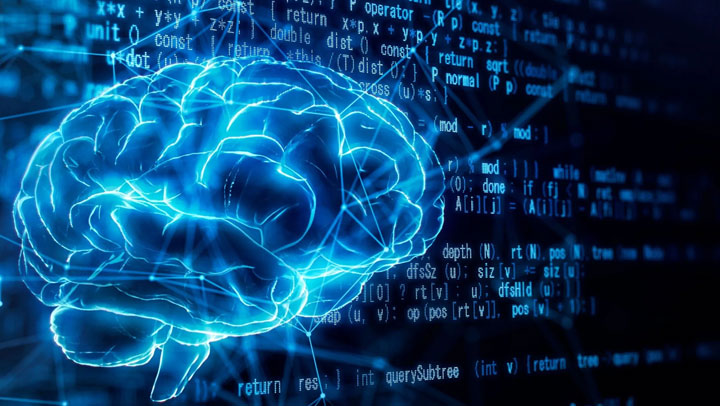

Novos algoritmos transformam a maneira como empresas e pessoas utilizam a tecnologia.
Inteligência Artificial avança em 2026 A Inteligência Artificial (IA) continua sendo uma das tecnologias mais revolucionárias da atualidade. Em 2026, empresas de diversos setores estão adotando sistemas inteligentes para automatizar processos, analisar grandes volumes de dados e oferecer serviços mais eficientes aos clientes. Ferramentas baseadas em IA já são utilizadas em hospitais para auxiliar diagnósticos médicos, em bancos para detectar fraudes financeiras e em indústrias para otimizar linhas de produção. Além disso, assistentes virtuais cada vez mais avançados ajudam usuários em tarefas do dia a dia. Especialistas afirmam que os próximos anos serão marcados por uma integração ainda maior da IA na sociedade, trazendo ganhos de produtividade e inovação. No entanto, também surgem desafios relacionados à privacidade, segurança dos dados e impacto no mercado de trabalho.